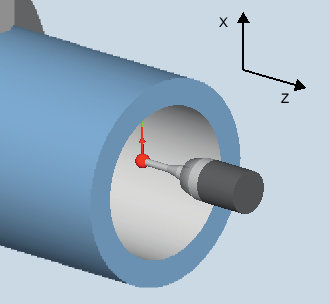
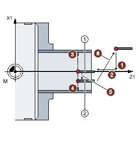

With this measuring version, the inside diameter of cylindrical workpieces can be measured. The diameter and radius programming are supported.
The measurement result (measurement difference) can be used as follows:
Correction in the work offset (only for 1-point measurements)
Offset of a tool
Measurement without offset
The measuring cycle determines the actual value of an inner diameter using a 1-point measurement or 2-point measurement symmetrically around the workpiece zero (center of rotation). The 2-point measurement is performed by reversing the spindle through 180 degree of the workpiece or by making measurements above and below the center of rotation.
An extended tool offset in the summed and setup offsets is possible.
For the tool offset, generally empirical values can be included in the calculation.
Measure: Inside diameter (CYCLE974)
For "Travel below the center", the inside diameter of the workpiece is measured using a 2-point measurement with the measuring cycle CYCLE994 . Two opposite measuring points symmetrical to the workpiece zero (center of rotation) are approached at a distance of the setpoint specified by the user.
A protection zone can be programmed, which should be taken into account when traversing. The user must take into account the ball radius of the probe when dimensioning the protection zone.
Positions of the probe when measuring the inner diameter using 2-point measurement (CYCLE994)
With this measuring version, the actual value of a workpiece with reference to the workpiece zero in the measuring axis, is determined by acquiring two opposite points on the diameter.
The workpiece is positioned by the cycle prior to the first measurement at the programmed angle position under parameter α0 . After the 1st measurement, the cycle also automatically generates the 180 degrees reversal before the second measurement. The mean value is calculated from both measured values.
A correction of the work offset (WO) is only possible when measuring without reversal (1-point measurement).
The probe must be calibrated in the measuring direction.
The probe type is 580 and must be active.
The cutting edge position can be 5 to 8 and must be suitable for the measurement task.
The probe should be positioned opposite the surface to be measured, above the turning center.
The probe is at a distance of the measuring path (DFA) from the measuring surface, above the turning center.
When "Travel under the center of rotation" is selected, after the end of the measuring cycle, the probe is at a distance of the measuring path (DFA) from the measuring surface, below the center of rotation.